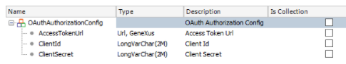
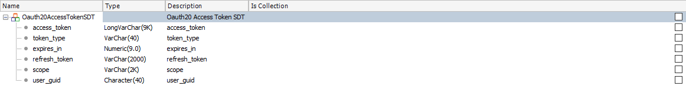

The OAuth module is distributed as part of the GeneXus Core module to let you work with the OAuth protocol. This first version of the module is based on the Authorization Code flow.
There are two steps to be carried out by different roles:
As a developer, you must ask the administrator for three pieces of information (client ID, client secret, and refresh token) to pass them as parameters to the module in order to receive a valid access token.
As shown in the Sample section below, these parameters must be passed specifically to the RefreshToken method. This method executes the API call to refresh the access token.
The RefreshToken Procedure Parm rule contains the following parameters:
1. The OAuthAuthorizationConfig SDT structure is as follows:

where the first member refers to the Identity Provider (IdP); for example, Google, Microsoft, GAM. To fill this field, an Enumerated Domain named "AccessTokenProvider" is offered within the module containing some of the most common IdPs.
The second and third members must be filled with the client ID and client secret data given by the administrator.
2. The RefreshToken parameter must be the refresh token given by the administrator.
3. The OAuthAccessToken SDT will be returned containing the access token requested. The following image shows its structure:

4. The DateTimeTokenExpire parameter will be returned containing the date and time the received access token expires.
5. The OutMessages parameter will return an empty string if the Success parameter is true. On the other hand, it will contain a description of the issue.
6. The out Success parameter will inform whether the request was successful or not.
&OAuthAuthorizationConfig.AccessTokenUrl = OAuth.v2.AccessTokenProvider.Google //https://oauth2.googleapis.com/token
&OAuthAuthorizationConfig.ClientId = "ClientId"
&OAuthAuthorizationConfig.ClientSecret = "SecretKey"
&Success = OAuth.v2.RefreshToken(&OAuthAuthorizationConfig, REFRESH_TOKEN, &OAuthAccessToken, &DateTimeTokenExpire, &Messages)
if (&Success)
&AccessTokenString = &OAuthAccessToken.access_token
else
Log.Error(&Messages)
endif
How does the above relate to sending Messages with Gmail using Oauth?
&OAuthAuthorizationConfig.AccessTokenUrl = OAuth.v2.AccessTokenProvider.Google //https://oauth2.googleapis.com/token
&OAuthAuthorizationConfig.ClientId = "ClientId"
&OAuthAuthorizationConfig.ClientSecret = "SecretKey"
for each User
where UserID = &UserId
&OAuthAccessToken.FromJSON(UserAccessToken) //This is optional. For Token reuse
&Success = OAuth.v2.RefreshToken(&OAuthAuthorizationConfig, REFRESH_TOKEN, &OAuthAccessToken, &DateTimeTokenExpire, &Messages)
if (NOT &Success)
Log.Error(&Messages)
return
endif
UpdateAccessToken(UserId, &OAuthAccessToken) //This is optional. For Token reuse
&AccessTokenString = &OAuthAccessToken.access_token
&SMTPSession.Host = 'smtp.gmail.com'
&SMTPSession.Port = 465
&SMTPSession.Timeout = 20
&SMTPSession.Secure = 1
&SMTPSession.Authentication = 1
&SMTPSession.UserName = 'Info@gmail.com'
&SMTPSession.Password = &AccessTokenString
&SMTPSession.AuthenticationMethod = "XOAUTH2"
&SMTPSession.Login()
&MailMessage.Subject="Email Subject XXX" //&MailMessage is based on the MailMessage Data Type
&MailMessage.Text="Message body"
&MailRecipient.Address = "xxx@gmail.com" //&MailRecipient is based on the MailRecipient Data Type
&MailRecipient.Name = "xxx"
&MailMessage.To.Add(&MailRecipient)
&SMTPSession.Send(&MailMessage)
endfor
Since GeneXus 17 Upgrade 9.
Microsoft Exchange OAuth 2.0 for emails: Generation and data collection from the Administrator
Google OAuth 2.0 process for emails: Generation and data collection by the Administrator